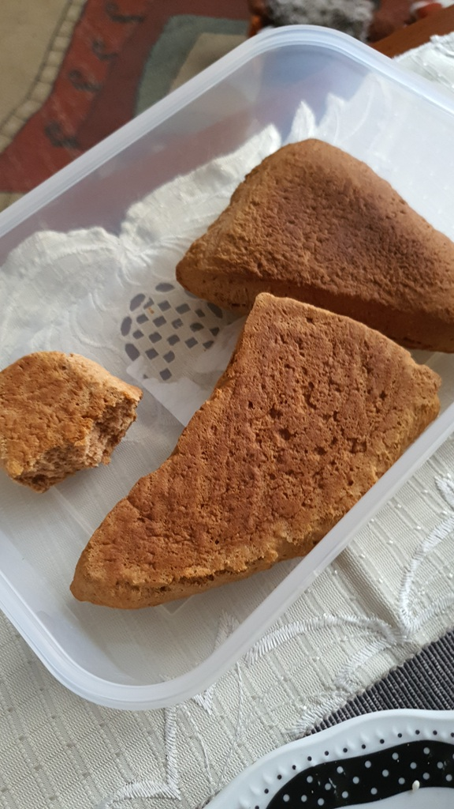

Skład:
- 300g mąki pszennej;
- 100g miodu;
- 1 opakowanie cukru waniliowego;
- 30g cukru;
- 1 łyżka cynamonu/przyprawy piernikowej;
- 100ml wody;
- 10g amoniaku;
- 1 jajko;
Przygotowanie:
Rozpuszczamy miód, cukier i cukier waniliowy. Podgrzewamy go tak długo, aż kryształy cukru w pełni się rozpuszczą. Do miski przesypujemy mąkę, cynamon i amoniak. Następnie dodajemy przestudzony karmel i wodę. Wszystko starannie mieszamy i zagniatamy w elastyczne ciasto. Przykrywamy ciasto ręcznikiem kuchennym i odstawiamy w ciepłe miejsce, aby odpoczęło (około pół godziny). Po tym czasie rozwałkowujemy je (powinno być bardzo cienkie na ok. 2 mm) i kroimy w prostokąty. Przekładamy prostokąty na blachę wyłożoną papierem do pieczenia. Jajko roztrzepujemy i smarujemy nim ciastka (opcjonalne). Tak przygotowane ciastka pieczemy ok. 8 minut w piekarniku rozgrzanym do 180 st. C. Po tym czasie, jeszcze gorące, przekładamy na wałek, aby nadać im tradycyjny kształt dachówek. Poznańskie rury lubią czas, ponieważ lepszego smaku nabierają po około 2-3 dniach od upieczenia.
Zdjęcia:
